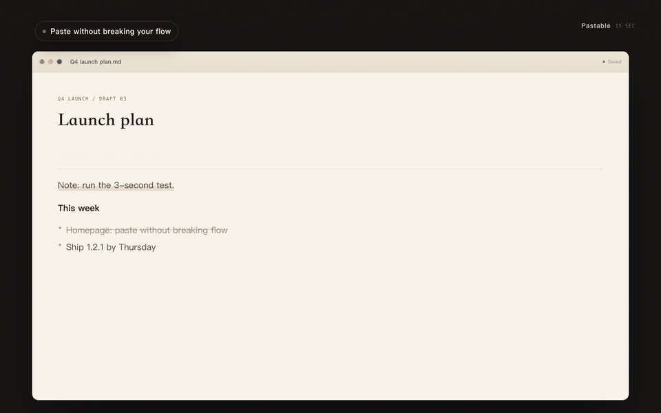
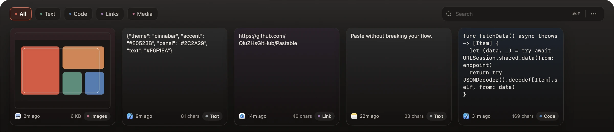

Always within reach
A global shortcut (⌘⇧V by default) opens a shelf pinned to the bottom of the screen over any app. It never steals keyboard focus — you keep typing, it just appears.
Clipboard shelf for macOS · Focus stays where you type
A full-width shelf at the bottom of the screen. It opens without stealing keyboard focus, so the cursor stays in your document — pick a card, paste it back, keep typing.
15 sec Summon → choose → paste, with focus still in your document

Features
The shelf opens without stealing keyboard focus. Summon, choose, paste — in one breath, without switching apps.
A global shortcut (⌘⇧V by default) opens a shelf pinned to the bottom of the screen over any app. It never steals keyboard focus — you keep typing, it just appears.
Exact or fuzzy search across titles and full content, with every keyword required to match. Categories, source apps and match reasons are highlighted.
Text, code, links, images and files are detected automatically. Images get thumbnails and metadata up front, so scrolling never decodes originals.
Click a card or press ↩ to paste into the frontmost app. Use ⌘1–9 / Fn1–9 for number-quick-paste, with optional formatting removal.
Set a retention window and a capacity cap. When history first exceeds it, Pastable asks before cleaning up — and shows you what will go.
History stays on this Mac by default. For multiple Macs, opt into a private CloudKit database in your own iCloud account.
Design
Opaque layers, solid text tokens, restrained cinnabar accents. The shelf sits above the Dock, so cards are never hidden and never float. Switching Spaces or going fullscreen leaves it exactly where it is.

Shortcuts
The defaults are already comfortable; the global hotkey can be changed to whatever you prefer in Settings.
The shelf opens without taking keyboard focus from the app you are using.
Privacy
No account, no analytics SDK, no ads. The app makes no requests to developer-operated servers.
Read the full privacy policyClipboard history lives in a local database inside the app sandbox. By default it never leaves this Mac.
Only when you turn it on, history syncs through the private CloudKit database of your own iCloud account. The developer cannot view or retrieve it.
Only Auto Paste needs Accessibility, to send ⌘V to the frontmost app. Everything else works without it.
No subscription, no in-app purchases, no account. One purchase, every feature.
Price as displayed on the Mac App Store · Requires macOS 15.5 or later